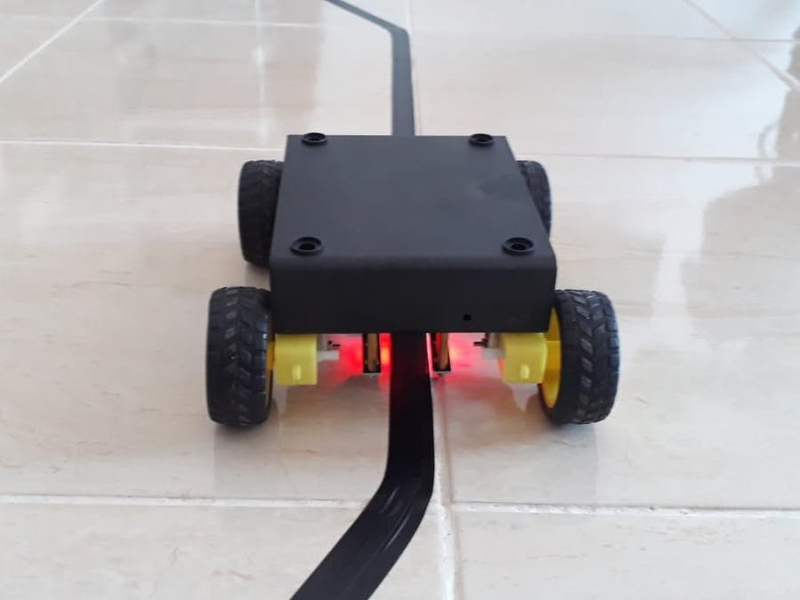
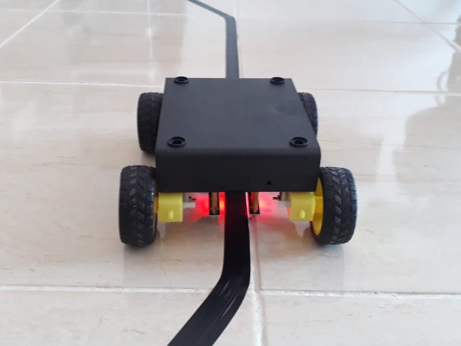

Abstract
Line Follower:
In this project I will show you how to build a line following robot step by step easily. This project is very basic and I think everyone who has electronics project as hobby they have at least once wanted to build this kind of car/toys/robot in their mind. It was long time ago I really want to build this robot, and finally just now I can make it happen. Thanks to all the posted on the internet. So, this car/robot will follow the contrass-colored line on the floor wherever it goes. The sensors are detecting the color, the arduino processing the read of sensors, and then tell the motors to move as it is. I assume many people has already knew the working principle of this car.
 

Code
int mr1=8; //motor right 1
int mr2=9; //motor right 2
int ml1=10; //motor left 1
int ml2=11; //motor left 2
int sr=6; //sensor right
int sl=7; //sensor left
int svr=0;
int svl=0;
int led=13;
int enr=3;
int enl=5;
int vspeed=100;
int tspeed=255;
int tdelay=20;
void setup()
{
pinMode(mr1,OUTPUT);
pinMode(mr2,OUTPUT);
pinMode(ml1,OUTPUT);
pinMode(ml2,OUTPUT);
pinMode(led,OUTPUT);
pinMode(sr,INPUT);
pinMode(sl,INPUT);
delay(5000);
}
void loop()
{
svr=digitalRead(sr);
svl=digitalRead(sl);
if(svl==LOW && svr==LOW)
{
forward(); //maju
}
if(svl==HIGH && svr==LOW)
{
left(); //belok kiri
}
if(svl==LOW && svr==HIGH)
{
right(); //belok kanan
}
if(svl==HIGH && svr==HIGH)
{
stop(); //berhenti
}
}
void forward()
{
digitalWrite(mr1,HIGH);
digitalWrite(mr2,LOW);
digitalWrite(ml1,HIGH);
digitalWrite(ml2,LOW);
analogWrite (enr,vspeed);
analogWrite (enl,vspeed);
}
void backward()
{
digitalWrite(mr1,LOW);
digitalWrite(mr2,HIGH);
digitalWrite(ml1,LOW);
digitalWrite(ml2,HIGH);
analogWrite (enr,vspeed);
analogWrite (enl,vspeed);
}
void right()
{
digitalWrite(mr1,LOW);
digitalWrite(mr2,HIGH);
digitalWrite(ml1,HIGH);
digitalWrite(ml2,LOW);
analogWrite (enr,tspeed);
analogWrite (enl,tspeed);
delay(tdelay);
}
void left()
{
digitalWrite(mr1,HIGH);
digitalWrite(mr2,LOW);
digitalWrite(ml1,LOW);
digitalWrite(ml2,HIGH);
analogWrite (enr,tspeed);
analogWrite (enl,tspeed);
delay(tdelay);
}
void stop()
{
analogWrite (enr,0);
analogWrite (enl,0);
}